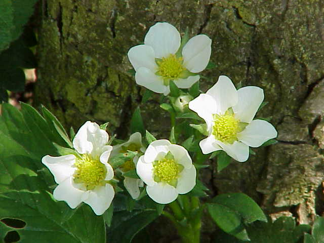

Culture
Fragaria vesca,le fraisier des bois, est une espèce sauvage. Pour la culture, il s'agit souvent de prélèvement d'individus sauvages. Cependant, des variétés améliorées sont proposées à la vente par les spécialistes. Il est tolérant à la chaleur et à la sécheresse mais pour une bonne production, il préfère un sol frais, plutôt acide et une exposition ensoleillée. Très résistant au froid, il craint cependant les gelées printanières.

Confusion possible
Le fraisier des bois peut être facilement confondu avec d'autres espèces de fraisiers :
- Fraisier musqué
- Fraisier vert
- Fraisier des Indes
Utilisation
Faisant depuis longtemps l'objet de cueillette dans les bois, cette plante était utilisée comme teinture, aliment ou pour ses vertus médicinales (décoctions, tisanes, sirops, onguents de toutes les parties de la plante : les Romains en faisaient des masques de beauté). Elle est introduite et cultivée dans les jardins européens vers le XIVe siècle pour ses vertus curatives ou pour être mangée.
Quand il a poussé sur un sol pollué, le fraisier fait partie des plantes qui peuvent avoir accumulé de l'arsenic, sous toutes ses formes l'arsenic a été beaucoup utilisé comme pesticide, notamment en Amérique du nord où il l'est encore abondamment sur les terrains de golf sous forme de méthanearséniate monosodique (MSMA).
Les fleurs du fraisier des bois sont blanches.
Source : Wikimédia, licence CC BY-SA
Les principaux consommateurs des fraises sont les mammifères carnivores tels que les renards. Ils peuvent transmettre l'échinococcose au travers de leurs déjections. Il faut éviter de consommer les fraises crues en provenance du milieu sauvage.
La bonne connaissance de son génome et son cycle court de génération (12-16 semaines) en font un modèle pour l'étude des rosaceae.
Dans la littérature
Sous l'herbe, pour que tu la cueilles,
Il met la fraise au teint vermeil,
Et te tresse un chapeau de feuilles
Pour te garantir du soleil.
Puis, lorsque sa besogne est faite,
Et que son règne va finir,
Au seuil d'avril tournant la tête,
Il dit : "Printemps, tu peux venir !"
Théophile Gautier, Émaux et Camées (1852)